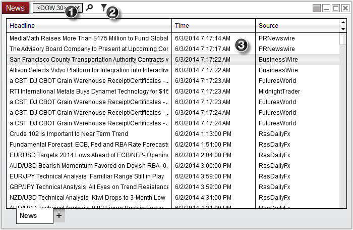
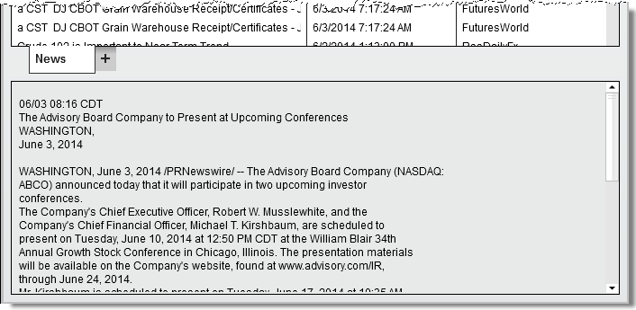
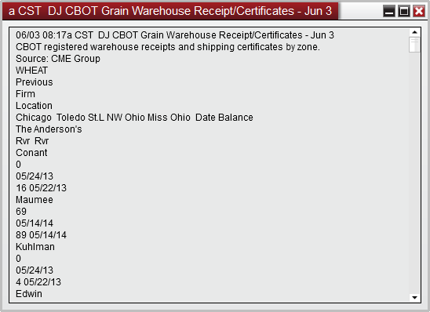
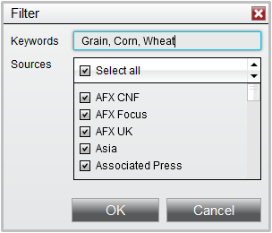
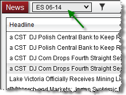

|
<< Click to Display Table of Contents >> News Window |


|
News Window
|
<< Click to Display Table of Contents >> News Window |
|
News sent from the connectivity provider is displayed in the News window. Alerts and filters can be configured based on keywords in the news headline.
News Window DisplayThe News window give you the ability to:
1.Filter news based on individual instruments or instrument list 2.Setup user defined Keyword filters 3.View a list of real-time news headlines

Reading PaneAnd optional Reading Pane can be enabled below the list of real-time news headlines by right clicking on the News window and selecting Show Reading Pane.

Headline WindowDouble clicking on a headline will open the Headline Window which will display the content of the news article.

|
 How to create a filter condition
How to create a filter condition
Creating a Filter ConditionThe News window gives you the ability to filter News Articles based off of user-defined Keywords
To enable this type of conditional filtering:
1.Select the Filter Icon from the News window 2.From the Filter window, insert the Keywords you wish to filter (multiple keywords can be separated by commas) 3.Optionally uncheck any Sources you may wish to exclude from your results 4.Press OK  Filtering on specified instrument(s)You can also define news filters based on a specific instrument, or even a list of predefined instruments.
To enable this type of filtering, simply select the desired Instrument or Instrument List from the Instrument Selector of the News Window
 |
 How to create an alert on news article
How to create an alert on news article
An alert will visually and audibly notify you when a new article is received.
Enabling News Alert
To turn on/off the Alerts feature:
Right click on the News window and check or uncheck Alert on New Article
You can customize the sound file, priority, and colors of the Alerts which are generated from the News Properties
Alerts will be sent to the Alerts Log window |